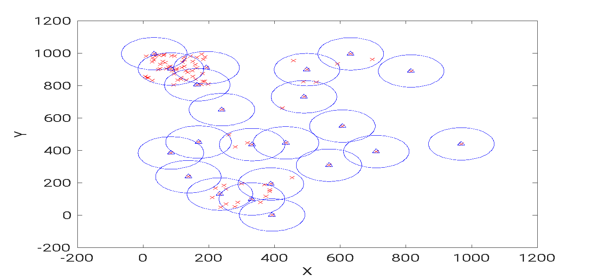
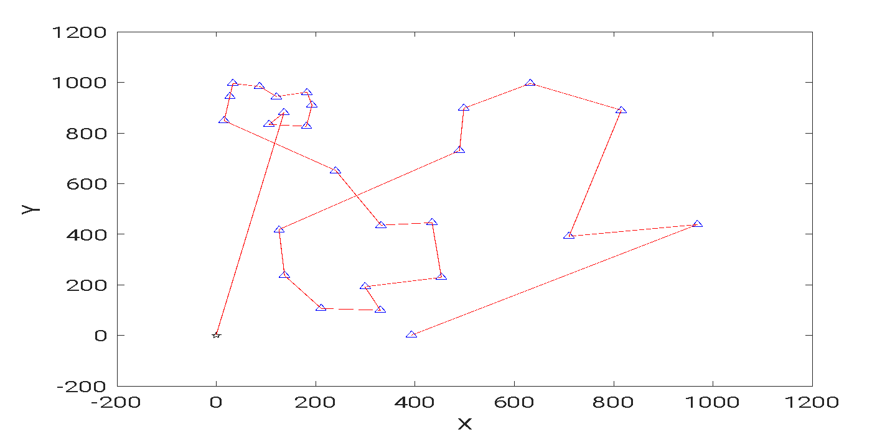

Fastplan: A Portable and Automated Framework for Accelerating Disaster Response
About
Over the course of 10 weeks, from May to July 2023, a team of 3 including my professor, Sunho Lim, a fellow TTU student, and myself researched and developed an app and two algorithms to automate drone flight for search and rescue operations. This research has since been published in the journal ScienceDirect under the name
Fastplan: A Portable and Automated Framework for Accelerating Disaster Response
Problem?
Natural disasters can cover an area ranging from a few miles to several states, traditional rescue operations and equipment that heavily rely on a limited workforce and resources are expensive, inefficient, and time-consuming. Due to the collapse and unavailability of communication infrastructure, the impacted areas often become a black spot, where 4G/5G and WiFi services are no longer available and survivors cannot use their smartphones for rescue through infrastructure networks. In light of these, a group of professional drone pilots flew multiple drones to locate isolated survivors, help search and rescue crews, and inspect power lines after Hurricane Idalia hit Florida in 2023. drones can also locate survivors by detecting WiFi signals periodically transmitted from their smartphones without the help of infrastructure networks. even though this is the case, every state has different regulations on drone flight and almost all require licenses to fly commercially. Due to this it is expensive and timely to have drone pilots report to the site of a natrual disaster to survey land and gain information for workers.
Solution?
The goal is to create a single automated drone that any search and rescue worker can deploy instantly to gather valuable information such as road conditions, the locations of people in danger, and other critical data to support their efforts. This would reduce the cost of deploying drones on-site, lower overall operational expenses, and enable workers to conduct their missions more efficiently and safely
Contribution
Over the 10-week period, I developed two algorithms in MATLAB to automate the drone's flight. The first algorithm processes coordinate data of populated buildings, converts it into an XY grid, and clusters these points of interest (POIs) into regions for the drone to survey.

I then developed the algorithm responsible for plotting a path to the identified POIs. To begin, I researched various pathfinding algorithms to determine which best suited my application. One of the most interesting was the ant colony algorithm, inspired by the way ants use pheromones to find efficient paths to clusters of food. Although I found this approach fascinating, I ultimately chose a weighted density pathfinding algorithm, which considers the density of each location while calculating the shortest route.
